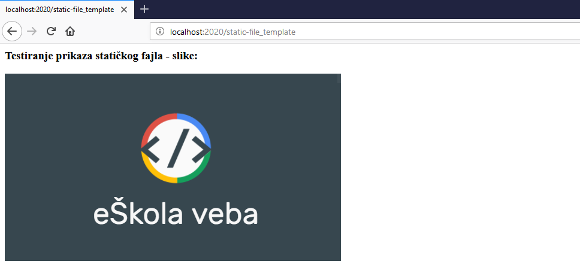

Statički fajlovi
Podešavanje
Statički fajlovi su fajlovi koje klijent preuzima sa servera, kako na primer slike, CSS fajlovi, JavaScript fajlovi itd. Pre svega potrebno je dozvoliti slanje statičkih fajlova pošto to Express ne podrazumeva:
express.static(root, [options])
root predstavlja direktorijum iz koga će se uzimati fajlovi za slanje klijentu
options objekat predstavlja moguće opcije pri postavljanju direktorijum.
Jedan primer korišćenja tog objekta:
var options = {
dotfiles: 'ignore',
extensions: ['html', 'htm'],
index: false,
setHeaders: function (res, path, stat) {
res.set('x-timestamp', Date.now())
}
}
dotfiles govori o tome kako će biti tretirani fajlovi koji počinju sa tačkom. Podrazumevana vrednost je "ignore" (ponašanje kao da takav fajl ne postoji), dok "deny" odbija takav zahtev, a "allow" ne označava nikakav poseban tretman.
extensions Ako fajl nije pronađen, traži fajlove sa zadatom ekstenzijom, u ovom slučaju 'html' i 'htm' i vraća prvi pronađen. Suprotno tome, zadaje se boolean vrednost false.
index predstavlja fajl koji se podrazumevano šalje za taj direktorijum. Podrazumevana vrednost je "index.html", a isključuje se postavljanjem boolean vrednosti false.
setHeaders - Funkcija koja postavlja HTTP zaglavlje u odgovoru klijentu pri dostavljanju fajla. res je odgovor, path je putanja fajla, a stat objekat sadrži još neke informacije o fajlu.
Konačno, postavljanje novog direktorijuma sa nazivom npr. public se vrši linijom:
app.use(express.static('public', options));
ili u slučaju da želimo da koristimo podrazumevane opcije samo:
app.use(express.static('public'));
Važna napomena:
Ekpress traži fajlove u odnosu na statički direktorijum, tako da ime statičkog direktorijuma nije deo URL.
Slanje statičkih fajlova
Dodati u direktorijum public sliku sa imenom npr. eSkola-veba.png. Kreirati novi .pug fajl u views folderu, neka se zove static-file_view.pug sa sadržajem:
html
head
body
h3 Testiranje prikaza statičkog fajla - slike:
img(src="./eSkola-veba.png" alt="Testiranje prikaza slike")
Odgovarajući kod bi bio:
var express = require('express');
var app = express();
app.set('view engine', 'pug');
app.set('views','./views');
app.use(express.static('public'));
app.get('/static-file_template', function(req, res){
res.render('static-file_view');
});
app.listen(2020);
Nakon poziva iz pretraživača prikaz bi bio:

Virtuelni prefiks
Za statički direktorijum moguće je postaviti virtuelnu putanju tako da svuda u kodu gde je potrebno pozvati taj fajl, mora se navesti postavljena putanja. U prethodnom primeru, virtuelna putanja npr. "/static" se za direktorijum public postavlja sa:
app.use("/static", express.static('public'));
pa se bi se u .pug fajlu slika eSkola-veba.png pronalazila sa:
img(src="/static/eSkola-veba.png" alt="Testiranje prikaza slike")